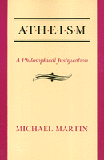

Logical reasons for being an atheist
Logical reasons for being an atheist


 Logical reasons for being an atheist
Logical reasons for being an atheist

|  |
AtheismA Philosophical JustificationMichael Martinpaper EAN: 978-0-87722-943-8 (ISBN: 0-87722-943-0) |
"Thousands of philosophers—from the ancient Greeks to modern thinkers—have defended atheism, but none more comprehensively than Martin. His lengthy arguments, detailed and incisive, are sharpened by modern developments in logic and inductive reasoning and by special attention to contemporary thinkers whose subtle writings are unknown to the general public.... Atheists should read it to bolster their creed, and theists should read it to test their faith against the deadly force of Martin's attack."
—Martin Gardner, The Humanist
In this book Michael Martin provides logical reasons for being an atheist. Carefully examining the current debate in Anglo-American analytic philosophy regarding God�s existence, Martin presents a comprehensive critique of the arguments for the existence of God and a defense of arguments against the existence of God, showing in detail their relevance to atheism. Claiming that atheism is a rational position while theistic beliefs are not, he relies both on logic and evidence and confines his efforts to showing the irrationality of belief in a personal supreme being who is omniscient, omnipotent, perfect, and the creator of heaven and earth.
The author�s approach is two-fold. By presenting and criticizing arguments that have been advanced in favor of belief, he makes a case for "negative atheism." By offering arguments against atheism and defending it from these attacks, he presents a case for "positive atheism." Along the way, he confronts the views of numerous philosophers—among them Anselm, Aquinas, Plantinga, Hick, and Swinburne—and refutes both classical and contemporary arguments that have been advanced through the history of this debate.
In his conclusion, Martin considers what would and would not follow if his main arguments were widely accepted, and he defines and distinguishes atheism from other "isms" and movements. Building on the work of religious skeptics and atheists of the past and present, he justifies his reconstruction of this philosophical dispute by citing some of the most interesting and important arguments for atheism and criticisms of arguments for the existence of God that have appeared in recent journal articles and have yet to be systematically addressed.
Excerpt available at www.temple.edu/tempress
"A tour-de-force for the mind.... This is a book to be read several times and savored while being slowly digested.... If one follows Martin's reasoning throughout this book, one will have gone through the most thorough and vigorous examination of the logical arguments surrounding atheism and theism that has ever been offered."
—Gordon Stein, American Rationalist
"[This book] has the impact of a runaway train. It is certainly the best philosophical justification of atheism that I have ever read.... Even readers with little philosophical background will find themselves richly repaid."
—Free Inquiry
"This is a bold work which presents its case with clarity, rigour, and a thorough knowledge of the most recent articles and monographs in the field of philosophy of religion.... The details of Martin's arguments deserve the close attention of all philosophers of religion."
—Michael Banner, Journal of Theological Studies
"The arguments in this clearly written work are sound and conclusive. There is scarcely a questionable sentence in the entire enormous work. A comprehensive work of solid scholarship, Atheism: A Philosophical Analysis is an important contribution to the philosophy of religion."
—Wallace Matson, University of California, Berkeley
"Martin's net is much more broadly cast than [Bertrand] Russell's to provide a comprehensive defense of atheism that pulls together criticisms scattered throughout atheistic literature. Clearly and systematically, Martin defends negative atheism the absence of belief in god or gods, by attacking the major classical and contemporary arguments for God's existence."
—Choice
Preface
Introduction
The Scope of Nonbelief •
A Brief Defense of Atheism Against Some Common Criticisms •
Purpose
Part I: Negative Atheism
1. The Justification of Negative Atheism: Some Preliminaries
A Presumption of Atheism •
The Ethics of Belief •
The Evil Demon and Objectivist Epistemology •
Conclusion
2. The Meaningfulness of Religious Language
Overview of the Problem •
Incoherence and Meaninglessness •
Nielsen�s Critique of God Talk •
Swinburne's Defense •
The Choice of an Observational Language •
Attempts to Show the Confirmability of Theological Statements •
Conclusion
3. The Ontological Argument
Anselm's Ontological Argument •
Malcolm�s Ontological Argument •
Hartshorne�s Ontological Argument •
Kordig�s Ontological Argument •
Plantinga�s Ontological Argument •
Conclusion
4. The Cosmological Argument
Traditional Deductive Cosmological Arguments •
Three Contemporary Defenses of the Cosmological Argument •
General Conclusion
5. The Teleological Argument
Background lo the Teleological Argument •
Tennant 's Cosmic Teleology •
Schlesinger�s Teleological Argument •
Swinburne�s Teleological Argument •
Taylor�s Teleological Argument •
General Conclusion
6. The Argument from Religious Experience
Religious Experience Defined •
Types of Religious Experience •
Mystical Experience •
Swinburne�s Principle of Credulity and Religious Experience •
Conclusion
7. The Argument from Miracles
The Argument in General •
The Concept of Miracles •
The Probability That God Exists, Given the Existence of Miracles •
Naturalism versus Supernaturalism and the Existence of Miracles •
The Difficulty of Showing the Existence of Miracles •
Evidence of Miracles in One Religion as Evidence Against Contrary Religions •
Miracles at Lourdes •
Indirect Miracles •
Conclusion
8. Some Minor Evidential Arguments for God
The Argument from Common Consent •
The Moral Argument •
The Argument from Reward •
The Argument from Justice •
Arguments from Scripture •
The Argument from Consciousness •
The Argument from Providence •
The Argument from Cumulative Evidence
9. Beneficial Arguments for God
Pascal�s Argument •
William James and the Will to Believe •
Conclusion
10. Faith and Foundationalism
A Traditional Concept of Religious Faith •
Existential Faith •
Wittgensteinian Fideism •
Are Avowals of Religious Faith True or False? •
Could an Atheist Have Faith in God? •
Religious Beliefs and Basic Beliefs •
Conclusion
Part II: Positive Atheism
11. The Justification of Positive Atheism: Some Preliminaries
The Justification of Negative Atheism as a Justification for Positive Atheism •
The Strength of the Case Needed for A Posteriori Arguments •
The A Priori Arguments and the Possibility of Rebuttal
12. Divine Attributes and Incoherence
Omniscience •
Divine Freedom •
Omnipotence •
Conclusion
13. Atheistic Teleological Arguments
Salmon 's Argument •
Expansion of the Argument •
The Universe as a Created Object •
Conclusion
14. The Argument from Evil
A Direct Inductive Argument from Evil •
An Indirect Inductive Argument from Evil •
Criticisms of a Probabilistic Argument from Evil •
Conclusion
15. The Free Will Defense
Background •
The Justification in General •
The Assumption of the Importance of Freedom •
Free Will und Contracausal Freedom •
Contracausal Freedom and Statistical Laws •
Compatibilism and World Preference •
Free Will and Evil •
Possible Worlds and God's Ignorance •
The Responsibility of God •
Is the Free Will Defense Relevant to the Problem of Moral Evil? •
Conclusion
16. Natural Evil
Three Contemporary Attempts to Solve the Problem of Natural Evil •
Conclusion
17. Soul Making Theodicy
Some General Problems with the Soul Making Defense •
Hick�s Soul Making Theodicy Explained •
Hick�s Soul Making Theodicy Evaluated
18. Some Minor Theodicies
The Finite God Theodicy •
The Best of All Possible Worlds Theodicy •
The Original Sin Theodicy •
The Ultimate Harmony Theodicy •
The Degree of Desirability of a Conscious State Theodicy •
The Reincarnation Theodicy •
The Contrast Theodicy •
The Warning Theodicy •
Conclusion
Conclusion
Appendix: Atheism Defined and Contrasted
Atheism Defined •
Atheism Distinguished and Contrasted •
Conclusion
Notes
Index
Michael Martin is Professor of Philosophy at Boston University and author of several books, including The Legal Philosophy of H.L.A. Hart: A Critical Appraisal and The Case Against Christianity (both from Temple).
© 2015 Temple University. All Rights Reserved. This page: http://www.temple.edu/tempress/titles/672_reg.html.